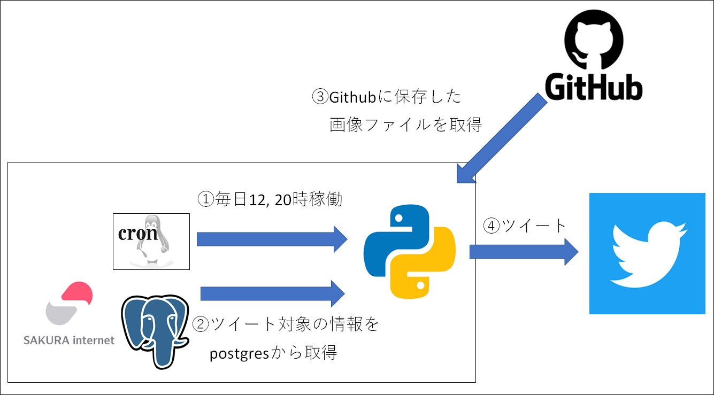

ロマサガRSイベントリマインダーbot
Tweetホーム > 個人開発したことまとめ > ロマサガRSリマインダー
ロマサガRSイベントリマインダーbot
ゲームのイベントが多すぎて管理するのが難しいから作ってみたbot。
作ったもの（実際に稼働したときのツイート）
開催中イベントの開始日時と終了日時をお知らせしてくれるbot
今06月22日 20時だよ。
— ロマサガRS リマインダー(sagamax_bot) (@sagamax_bot) June 22, 2022
イベント開催予定！
・育成 過去のサガ魂(メイン)：06/03 12:00～06/25 04:00
・育成 キャラ別,陽,RS1,詩人(制圧戦,メイン)：06/06 12:00～06/25 04:00
続きはリプ欄を見てね！ pic.twitter.com/UMaJAsn1IG
どんな仕組み？

- ①時間になったらcronでpythonプログラムを起動
- ②DB(postgres)から開催中イベントの情報を取得
- ③対応するイベントの画像をGithubから取得
- ④ツイート実行
イベント情報をDBに登録する作業は手動だが、それさえやってしまえば、開催中のイベントの終了日を毎日お知らせしてくれる。
決まった文字や画像を呟くだけのbotなら以下の記事参照。
pythonソースコード(bot)
pythonのソースコードは以下の通り。dailyRemind() 関数が処理の入口。
ぶつかった壁とか学んだこととか
①pip install psycopg2 をインストールできない
ローカル端末(Windows)で動いたbotを、linux環境で動かそうとした。
pythonからpostgresに接続する際、psycopg2 というライブラリを使用しているので、それをインストールするためにlinux環境で pip install psycopg2 コマンドを実行したら下記のエラーが発生。
Using cached psycopg2-2.8.5.tar.gz (380 kB)
ERROR: Command errored out with exit status 1:
command: /usr/local/bin/python -c 'import sys, setuptools, tokenize; sys.argv[0] = '"'"'/tmp/pip-install-tca4iell/psycopg2/setup.py'"'"'; __file__='"'"'/tmp/pip-install-tca4iell/psycopg2/setup.py'"'"';f=getattr(tokenize, '"'"'open'"'"', open)(__file__);code=f.read().replace('"'"'\r\n'"'"', '"'"'\n'"'"');f.close();exec(compile(code, __file__, '"'"'exec'"'"'))' egg_info --egg-base /tmp/pip-pip-egg-info-ef0732k3
cwd: /tmp/pip-install-tca4iell/psycopg2/
Complete output (23 lines):
running egg_info
creating /tmp/pip-pip-egg-info-ef0732k3/psycopg2.egg-info
writing /tmp/pip-pip-egg-info-ef0732k3/psycopg2.egg-info/PKG-INFO
writing dependency_links to /tmp/pip-pip-egg-info-ef0732k3/psycopg2.egg-info/dependency_links.txt
writing top-level names to /tmp/pip-pip-egg-info-ef0732k3/psycopg2.egg-info/top_level.txt
writing manifest file '/tmp/pip-pip-egg-info-ef0732k3/psycopg2.egg-info/SOURCES.txt'
Error: pg_config executable not found.
pg_config is required to build psycopg2 from source. Please add the directory
containing pg_config to the $PATH or specify the full executable path with the
option:
python setup.py build_ext --pg-config /path/to/pg_config build ...
or with the pg_config option in 'setup.cfg'.
If you prefer to avoid building psycopg2 from source, please install the PyPI
'psycopg2-binary' package instead.
For further information please check the 'doc/src/install.rst' file (also at
<https://www.psycopg.org/docs/install.html>).
----------------------------------------
ERROR: Command errored out with exit status 1: python setup.py egg_info Check the logs for full command output.
調べてみたところ、psycopg2 は libpq（PostgreSQL client library）という、C言語で書かれた Postgres のインタフェースを python でラップしたものなので、C言語のコンパイラが必要（参考）。
Windowsの場合はMicrosoft Visual C++というものが初めからインストールされており、ここにコンパイラが含まれているので、pip install psycopg2 コマンドで psycopg2 をインストールするだけで動いた。
linux サーバにはこのようなCコンパイラが入っていなかったので動かなかったということらしい。
yum install -y postgresql-devel でコンパイラをインストールしてから再度 pip install psycopg2 すると無事インストールできた。
参考
- postgresql-devel
- psycopg2をインストールしてPythonからPostgreSQLを操作する
- 「Microsoft Visual C++ 14.0 or greater is required.」が出た場合の対処方法
②隔週で呟く内容を切り替えたいんだけどどうすれば？
python の datetime オブジェクトの中に isocalendar() という関数があり、日付から、何年の第何週の何番目の日かというのをTupleで返却してくれる。数字型。
この「何週目か」を2で割った余りが1か0かで分岐すれば隔週で内容を切り替えることができる。
元のpythonコードを見ると「 dt_now.isocalendar()[1] 」で取得した行番号で分岐していることがわかる（以下、pythonコードの該当箇所抜粋）。
参考